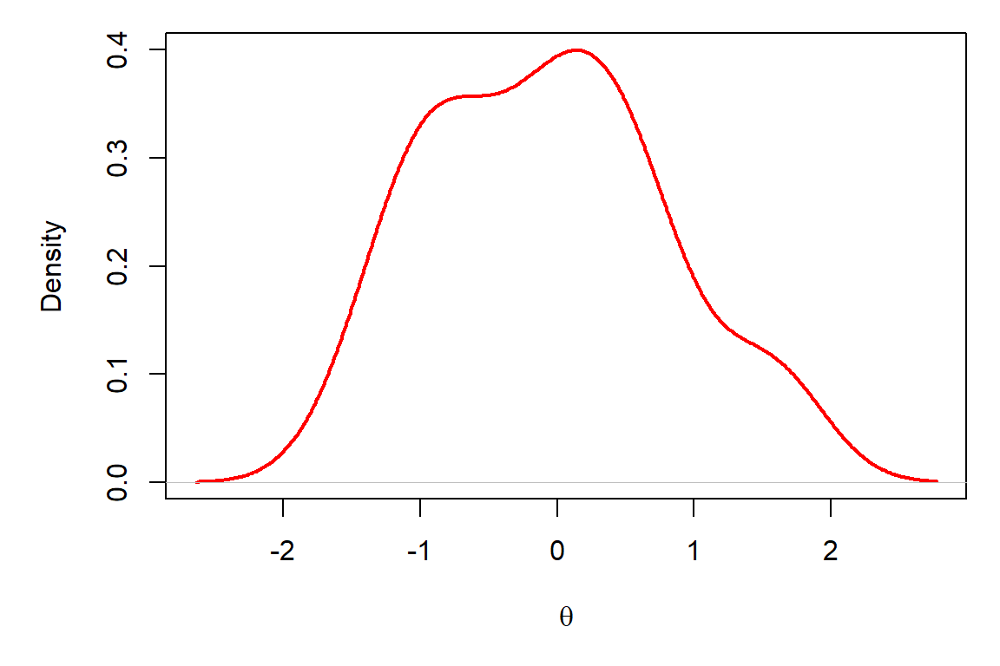
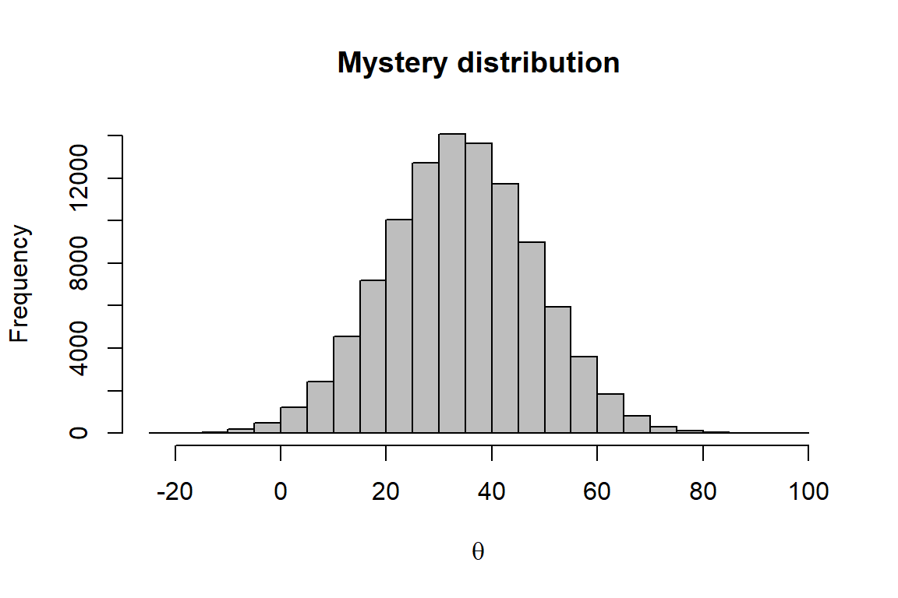

The objective of this assignment is to apply what you have been learning in R in order to start learning about more about sampling distributions and how they apply to designing research questions. We have discussed a number of probability distributions in the exponential family of distributions, and now it is time to put that talk into action.
By the end of this lab, you should be able to 1) simulate data from a wide variety of probability distributions in the exponential family, 2) calculate summary statistics for sampling distributions, and 3) estimate the parameters of some probability distributions using the method of moments and/or maximum likelihood estimation.
Let’s start with the normal distribution to knock the rust off and get ourselves thinking about probability distributions again. Recall that we can simulate data from the normal using something like this:
In this example, we have drawn 30 random samples from a normal distribution with a mean of 0 and a standard deviation of 1. Also recall that we can plot these data as samples from a continuous distribution using a curved line in R to see if it looks like it should:
par(mar = c(5,5,1,1))
plot(density(ndata),
main = "",
xlab = expression(theta),
col = "red",
lwd = "2")
Now, what if I gave you the following plot and asked you if you could find parameters of the normal distribution from which these samples were drawn?

Question 1. What are the approximate mean and standard deviation of the distribution that has been sampled here? Play with the rnorm function in R and change the values of the mean and standard deviation until you are able to approximately replicate the graph above. Use the hist function to plot the data each time you simulate them to check if the pattern is close. NOTE: You will be able to zero in on this faster if you use large sample sizes for n, but if n is too large it will take a long time to simulate each data set.
What a pain, but it’s good to see how these parameters change the shape and location of the sampling distribution so we can understand what they do.
Now let’s take a look at another way to do this. This time, instead of handing you a histogram, a researcher has provided you with the following data set for a project on which you are working. In this case it is for diastolic blood pressure measurements from 10,000 physically fit people (totally made up).
# I'll simulate the data for you
# in another file and you can read
# in the data from a text file like
# this (just make sure it is in
# the correct directory):
dbp <- read.csv("data/dbp.txt") Question 2. Calculate the mean and variance of this distribution using the method of moments. You can write your own function, or you can use the built-in R functions like mean() that we used in Chapter 5.6 of the textbook. What are the estimated mean and variance using this method?
Question 3. Now calculate the mean and the variance of this sampling distribution using maximum likelihood estimation. Recall that you can estimate the parameters using the built-in fitdistr() function in R we covered in Chapter 5.6.2.2. Just remember to pay attention to the answers that R gives you.
Question 4. Calculate the 95% confidence limits for this distribution using the quantile function. Remember to think carefully about what probabilities you need to use for the 95% CI (2.5th and 97.5th percentiles, not 5th and 95th).
We talked about this distribution in class this week, and about how useful it can be due to its flexibility. However, given that the Beta is controlled by two shape parameters, it can be tough to wrap your head around. Let’s play.
Simulate 10,000 random samples from a beta distribution with parameters \(\alpha\) (shape1 in R) = 30 and \(\beta\) (shape2 in R) = 12 and plot a histogram of the sampling distribution that I assigned to an object called beta_sample:
# Get a random sample from the beta
beta_sample <- rbeta(n = 1e4, shape1 = 30, shape2 = 12)
# Plot a quick histogram in base graphics
hist(beta_sample, main = "", col = "gray")Question 5. Now, play with shape1 and shape2 parameters in the code above to answer the following questions.
shape1 is much larger than shape2?shape2 is much larger?Take a random draw from a Bernoulli distribution. Remember, this distribution is the one that is like flipping a coin one time and the only parameter that controls the distribution is the probability of success:
# Load the package
library(Rlab)
# Take a random sample from the Bernoulli
bern.sample <- rbern(n = 1, prob = 0.5) Question 6. If you take 2,500 samples instead of just one in the code above, what is the total number of trials that result in success (the ones that are a ‘1’)? Use the built in R functions to figure this out, don’t try to count all 2,500 elements in the vector. There are a few different ways to do this one. Check out Chapter 2.2 in the text book if you are having trouble remembering some of those basic vector operations.
Question 7. How does this compare to what you expected?
Remember the binomial distribution is like the Bernoulli, but instead of flipping one coin at a time, we are flipping \(N\) number of coins (size) per trial:
Question 8. Imagine that there is an 85% chance of surviving a procedure. If the procedure was performed on 14 patients (size) by each surgeon in my operating room next year, what is the average number I should expect to survive if I have 13 surgeons (n) and patient survival is independent of surgeon?
Recall that the Poisson distribution was created to explain the number of events that occur over some period of time. We can simulate data from the Poisson using (for example):
The code above takes 10 random samples from a Poisson distribution with a mean (and variance!) of 10.
Suppose that we are interested in describing the distribution of the genus Photinus in Upstate New York. We collected as many speciments as we could on 10 different nights at ten field sites. Now we want to know what is the mean and variance of the number of Photinus we caught each night so we can compare these numbers to historical data.
Here are the data:
Question 9. Using the data in the file counts.txt (you have to read it in first), estimate the mean and variance for the number of Photinus per night using any method appropriate for these data (see above or below for data read, but remember to change the file name to counts.txt).
Suppose that the data in question 9 looked more like those contained in this file:
Question 10.
Is the mean of the data in counts2 similar to that in counts?
What about the median?
Do they look the same when you plot them?
If not, what type of distribution is represented by the data in counts2?
Calculate the parameters of the sample in counts2 using maximum likelihood estimation for the distribution provided in your answer to “d”. Remember, the fitdistr() function is useful for distributions other than the normal.
This work is licensed under a Creative Commons Attribution 4.0 International License. Data are provided for educational purposes only unless otherwise noted.